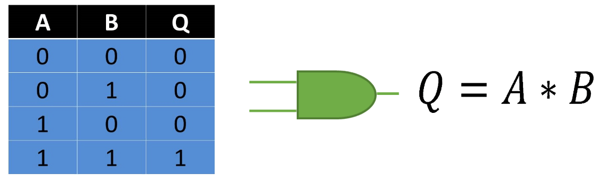
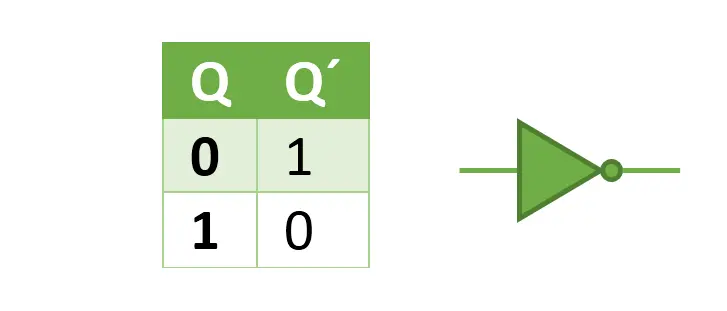

Introducción
Tocar el tema de los bloques fundamentales de la computación: las compuertas lógicas. Estos diminutos circuitos electrónicos son los verdaderos héroes ocultos detrás de cada dispositivo digital que utilizamos.
¿Qué son las Compuertas Lógicas?
Las compuertas lógicas son circuitos lógicos de conmutación que responden a partir de condiciones particulares y cuya conmutación parte del principio de un interruptor booleano. Son ampliamente utilizadas en el funcionamiento de diferentes semiconductores y microprocesadores. Con el objetivo de obtener señales en binario que puedan ser interpretadas fácilmente por ordenadores cuando se satisfacen los requerimientos de alguna entrada lógica.
Tipos de Compuertas Lógicas Básicas
1. Compuerta AND
La compuerta AND produce una salida de 1 solo si todas sus entradas son 1.
2. Compuerta OR
Esta compuerta realiza una operación sumadora en los valores de sus variables de entrada, lo que significa que su valor de salida será 1 siempre que alguna de sus entradas lo sea; de lo contrario, será 0.

3. Compuerta NOT
La compuerta NOT invierte su entrada: si la entrada es 0, la salida es 1, y viceversa.
Experiencia desde mi punto de vista
Durante el tema del Hardware se tuvo la oportunidad de trabajar directamente con estas compuertas lógicas que yo destaco o en su instancia considero mas relevante:
- Construir compuertas lógicas usando transistores y protoboards y una super explicacion de parte del profe dio una comprensión física de cómo funcionan estos componentes.
- Utilizar simuladores de computadora para crear y probar diferentes configuraciones de compuertas lógicas, lo que nos llevo mas a fondo respecto a este tema.
- Incluso crear un sumador de 2 bits, demostrando cómo estas simples compuertas pueden combinarse para realizar operaciones matemáticas complejas.
.png)
.png)
Aplicaciones en el Mundo Real
Las compuertas lógicas son la base de todos los circuitos digitales. Se utilizan en:
- Procesadores de computadoras
- Memorias digitales
- Sistemas de control automático
- Y prácticamente cualquier dispositivo electrónico moderno
Compuertas Lógicas en Nuestro Día a Día
Las compuertas lógicas están presentes en casi todos los dispositivos electrónicos que usamos diariamente. Aquí hay algunos ejemplos concretos:
1. Teléfonos
Las compuertas lógicas se utilizan en el procesador para realizar millones de operaciones por segundo. Por ejemplo:
- Cuando desbloqueamos el teléfono con huella dactilar, una serie de compuertas AND verifica que cada punto de la huella coincida con el patrón almacenado.
.jpg)
2. Una lavadora
Los electrodomésticos modernos utilizan compuertas lógicas para su funcionamiento. Por ejemplo, en una lavadora inteligente:
- Compuertas AND se usan para verificar si la puerta está cerrada Y hay suficiente agua antes de comenzar el ciclo de lavado.
- Compuertas OR pueden decidir si detener el ciclo si la puerta se abre O si se detecta un desequilibrio en la carga.
.jpg)
3. Lo que llamamos alarmas
Los sistemas de alarma utilizan compuertas lógicas para su funcionamiento:
- Una serie de compuertas OR monitorean diferentes sensores (puertas, ventanas, movimiento). Si cualquiera se activa, la alarma suena.
- Compuertas AND se usan para verificar si el sistema está armado Y se ha detectado una intrusión antes de activar la alarma.
Reflexión
Es un tema super relevante el de las compuertas lógicas pues aprendi mas sobre el sistema binario. Me ha permitido entender cómo, a partir de estos simples bloques de construcción, se pueden crear sistemas increíblemente complejos. Es fascinante pensar que los mismos principios que usamos para construir un simple sumador de 2 bits son la base de las supercomputadoras modernas.
Ha sido un tema interesente y de como el ahora tener la posibilidad de programar es en base a un sistema de tan solo 1 y 0. Recalcando su funcionamiento a traves de operaciones matematicas lo que implementa o pone a flote nuestra logica como futuros ingenieros de software.